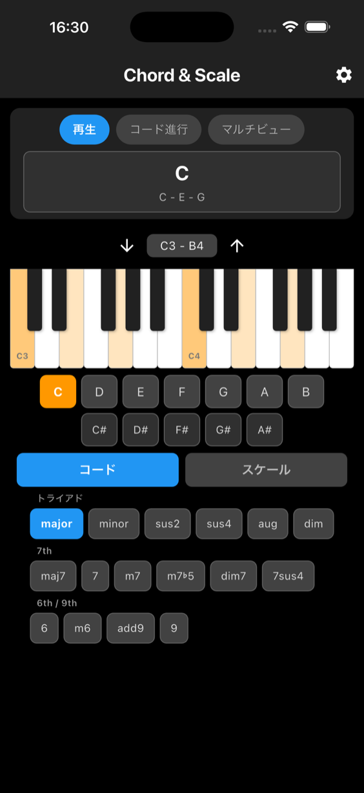
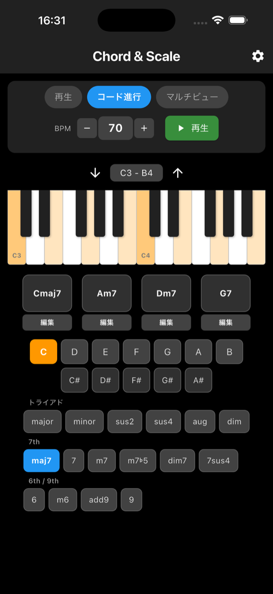
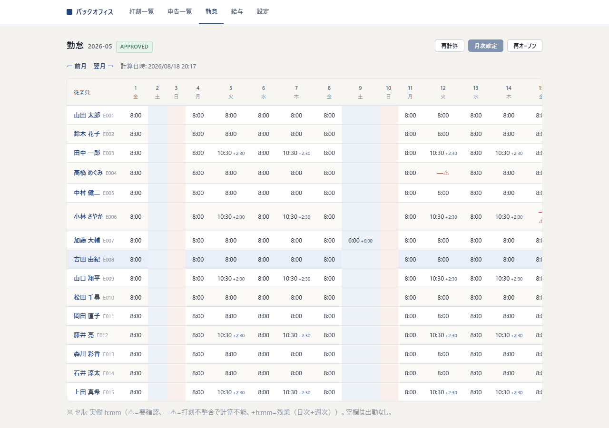

Works
制作実績
個人で企画・設計・実装したものです。公開中のアプリの詳細ページは、そのアプリのサポートページを兼ねています。
-


-


iOSアプリ / Flutter
Piano Chord
ピアノのコードを直感的に鳴らせる音楽アプリ。12音×16種のコードをタップで演奏でき、コード進行のループ再生や、4画面・8画面のマルチビューで響きの違いを聴き比べられます。
-

Webアプリ / Next.js
勤怠打刻・管理アプリ
打刻から勤怠集計・給与明細までを一気通貫で扱うマルチテナントSaaS。PostgreSQLのRow Level Securityでテナントを分離し、350件の自動テストで検証しています。
開発中 詳細 -

Webアプリ / CodeIgniter 4
PHP：勤怠打刻Webアプリ（プロト）
従業員がブラウザから出退勤を打刻するWebアプリ。打刻漏れ申請、役割別の管理者ログイン、打刻の監査ログを備えています。
開発中 詳細